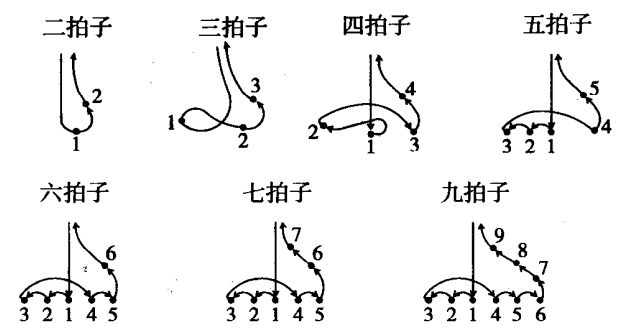

第二章 节奏与节拍
第一章说明了单个音和休止能持续多久。这一章把它们放进乐句，看看固定的拍点怎样承载变化的节奏。
节奏、节拍与节奏型
节奏是音的长短、强弱以及停顿在时间上的组织。节拍是等时值的拍按强弱规律循环。脚可以均匀打拍，嘴里念的节奏却可以长短不一。
反复出现、辨识度较高的节奏组合叫节奏型。例如舞曲常反复使用相似的短长组合和重音位置。旋律可以改变，节奏型仍能帮助听者认出舞步和风格。散板则容许节奏脱离固定的拍循环。
小节和拍号
选定一种音符时值作计量单位，就得到单位拍。把单位拍按强弱组织起来，形成拍子。小节线通常画在强拍前，两条小节线之间是一小节。乐曲结尾用一细一粗的终止线。
拍号写在五线谱上时，两个数字之间省去正文记法中的横线。记号 可代替 ， 可代替 。演奏较快的 时，也常把三个八分拍合为一个大拍。
单拍子、复拍子和混合拍子
单拍子每小节只有一个强拍。复拍子由相同的单拍子合成，后面各组的起拍降为次强。混合拍子由不同的单拍子合成，次强拍随分组位置移动。
| 类型 | 拍号 | 强弱规律 |
|---|---|---|
| 单拍子 | 、 | 强 |
| 单拍子 | 、 | 强弱 |
| 单拍子 | 、、 | 强弱弱 |
| 复拍子 | 、 | 强弱｜次强弱 |
| 复拍子 | 、、、 | 三个单位拍一组，第一组为强，后续各组为次强 |
| 混合拍子 | 2＋3 或 3＋2 | |
| 混合拍子 | 、 | 2＋2＋3、2＋3＋2 或 3＋2＋2 |
散板和变拍子
散拍子又叫散板，在戏曲、说唱音乐中常见。它容许速度和时值随演唱伸缩。谱上一般不画固定小节线，有时用虚线提示语句边界。
变拍子指两种或更多拍子在一首作品中交替。规律性交替时，可以在开头并列标出各拍号。偶尔变换时，在改变的小节前标出新拍号。换行后的第一小节变拍时，也可在上一行末预告。
击拍与指挥图式
击拍时，手向下和抬起合为一拍，也可一边击拍一边念节奏。采用指挥图式时，手在轨迹上的击点对应各拍，动作途中保持均匀。图中数字标出击点顺序，箭头表示手势方向。

五拍、六拍、七拍、九拍可以按各单位拍依次击点。速度快时，六拍子可合成两个大动作，九拍子可合成三个，每个动作包含三个单位拍。
切分音
一拍分成两份，第一份是强位，第二份是弱位。分成四份时，第一份最强，第三份次强，第二和第四份较弱。这个位置关系和小节里的强拍、弱拍可以同时存在。
切分音从弱拍或弱位开始，持续到后面的强拍、强位或次强位，把听觉重心移到较早的起音。跨边界时常用延音线把两边连接起来，也可以连续出现多个切分。
下面第一个小节在两拍上都重新起音。第二小节里，中间的长音从第一拍后半开始，盖过第二拍的拍点。
音值组合
音值组合把小节中的短音按其拍点重新分组，以便看出每拍在哪里开始。单拍子通常按单位拍连符杠。复拍子、混合拍子先按构成它的单拍子分组，例如 分成 3＋3， 可以分成 2＋3 或 3＋2。
跨拍的附点音 拆成一个八分音符和一个十六分音符，再用延音线连接 ，就能标出第二拍的起点。两种写法的音高和实际时值相同。
符杠、附点和休止符在分组中的写法
- 单位拍短于四分音符时，一小节的短音可以共用符杠。短音很多时，可用次级符杠分出两个或四个相等的小组，保留相连的第一道符杠。
- 同一个音占满整小节时，可用一个等长音符表示，例如 中的附点二分音符。
- 附点能简化读谱时可以保留。若附点音从前一拍弱位起、跨进后一拍强位，通常拆成两个音符并用延音线相连，显出后一拍。
- 休止也依拍子分组。例如 小节第一拍和第四拍有音时，中间两拍通常分别写四分休止符，显出小节中间的分界。
划分小节与弱起
划分小节的依据包括重音的周期和音符时值的组合。较长的音往往偏强，较短的音往往偏弱，切分时重音位置可能改变。小节线通常写在强拍前。
例如听出重音每两个四分音符时值出现一次，就可按 尝试划分。附点四分音符加八分音符正好两拍，下一次起重音便进入新小节。后面一拍一个四分音符，再用两个八分音符填另一拍，也正好组成一小节。
旋律有时在正式的第一强拍前就开始。开头不足一整小节的那部分叫弱起小节。这类乐句常在末尾补足开头缺的拍数。例如 里开头只有一拍，若末尾与开头互补，最后一小节就是两拍。
三拍子的弱起例 依次包含一拍弱起、三拍完整小节、两拍末小节。